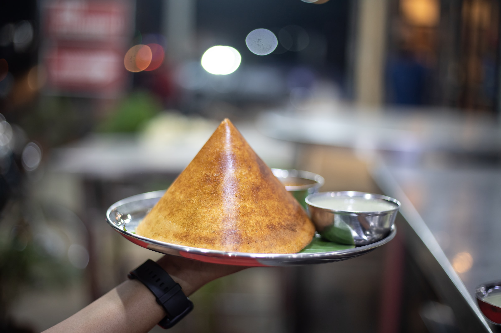

Dosa
"You can take my freedom but you can't take my Dosa"

A dosa, also called dosai, dosey, or dosha, is a thin pancake in South Indian cuisine made from a fermented
batter of ground black lentils and rice. Dosas are popular in South Asia as well as around the world. Dosas are
served hot, often with chutney and sambar.
Dosa is the brainchild of South India. According to historians, it originated in a town knows as Udipi
around 1st century AD, as mentioned in Sangam literature. Dosa is served across the country in variations which
differ from place to place. Dosa is rich in carbohydrates and a good source of protein. As it is made from
a fermented batter, it is a good source of Vitamin B and C.
Ingredients
(For 15-16 servings)
- 1/2 cup of idli rice or parboiled rice (100 grams)
- 1/2 cup regular rice (100 grams)
- 1/4 cup urad dal (or) whole or split black gram (50 grams)
- 1/8 teaspoon fenugreek seeds (or) 2 pinches
- 2 tablespoons thick poha (flattened rice)
- 1.5 cups water for soaking both rice and lentils
- 3/4 cup water (for grinding, add water as required)
- 1/2 teaspoon rock salt
- Oil as required
Steps
Soaking Lentils And Rice
- In a bowl take the idli rice or parboiled rice along with the regular white rice.
- To the same bowl, add urad dal and fenugreek seeds.
- Rinse the rice, lentils and methi seeds together a couple of times and keep aside.
- In a separate bowl, take the flattened rice.
- Rinse it once or twice in water and then add rinsed flattened rice to the bowl containing the rinsed
rice+lentils+methi seeds.
- Pour 1.5 cups water. Mix. Cover with a lid and soak everything for 5 to 6 hours.
Making Dosa Batter
- Drain all the water and add the soaked ingredients in a wet grinder jar.
- Add 2/3rd to 3/4th cup water and grind till you get a fine grainy consistency of rice in the batter. A
smooth consistency of batter is also fine.
- If the mixer gets heated up, then stop and wait for some minutes. When the mixer cools down, grind
again. Depending on the jar capacity, you can grind everything once or in two batches.
- Now take the batter in a large bowl or pan.
- Add 1/2 tsp rock salt. Mix very well. Cover and allow to ferment for 8 to 9 hours or more. Time of
fermentation will vary depending on the temperature conditions.
- A proper fermentation will double or triple up the volume of the batter and you will see tiny air
pockets in the batter with a light sour aroma.
- Now lightly stir the batter, before you begin to make dosa.
Making Dosa
- Heat a cast iron pan. When the pan becomes hot, spread ¼ to ½ teaspoon oil all over the pan. Do keep the
heat on low to low-medium heat, so that you are easily able to spread the batter. If the pan base is
very thick, then keep the flame to medium.
- Do not spread oil if you are using a non stick pan, as you won’t be able to spread the batter.
- Now take a ladle full of the batter. Pour the dosa batter and gently spread the batter starting from the
center and moving outwards.
- Cover it with a lid and cook the dosa on a low to medium heat. Do regulate the flame as per the pan size
and thickness.
- When you see the batter on the top has cooked well and the bottom has become crisp and golden, then
sprinkle 1/4th to half teaspoon oil on the edges and center.
- With the spoon spread the oil on the dosa.
- Cook till the base is nicely golden and crisp. The base will leave the pan and the sides will also get
separated when it gets cooked.
- Fold and serve dosa.
Serve your Dosas hot!
Go to top